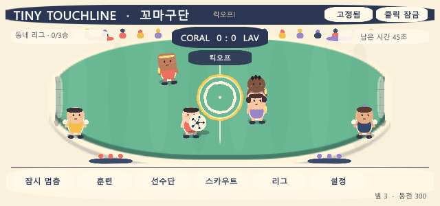
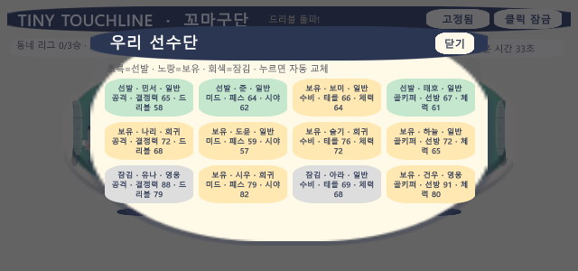

자동 경기
공과 선수의 상태를 작은 창에서도 읽을 수 있는 자체 진행 축구 시뮬레이션입니다.
LOCAL APP WINDOWS · UNITY 6
데스크톱 위 여섯 꼬마 선수가 스스로 경기하고, 훈련·스카우트·리그 승격으로 작은 구단을 키우는 640×300 축구 컴패니언입니다.

꼬마 선수들은 스스로 움직이고 패스하고 슛합니다. 사용자는 경기 흐름을 지켜보며 동전으로 속도·슈팅·패스를 훈련하고, 스카우트와 리그 승격으로 선수단을 확장합니다.
공과 선수의 상태를 작은 창에서도 읽을 수 있는 자체 진행 축구 시뮬레이션입니다.
세 능력 훈련, 선수 역할·특성 확인, 중복 성장 조각을 포함한 스카우트를 제공합니다.
각 단계에서 3승을 쌓아 프로 1군까지 올라가며 패배 뒤에도 다시 도전할 수 있습니다.
그래픽은 Unity 런타임 도형과 프로젝트 소유 색상으로 구성됩니다.
